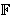

0.
0.
Ovi nas primjeri dovode do sljedeće definicije.
| Definicija: Za prirodan broj n kažemo da je kongruentan broj ako je jednak površini nekog pravokutnog trokuta s racionalnim stranicama. |
Vidjeli smo već da su 5 i 6 kongruentni brojevi. Broj 7 je također kongruentan jer je jednak površini trokuta sa stanicama (24/5, 35/12, 337/60). S druge strane, poznato je da brojevi 1, 2, 3, 4, 8, 9 i 10 nisu kongruentni.
Postavlja se pitanje kako za dani prirodni broj n odrediti da li kongruentan ili ne. Vidjet ćemo da je to pitanje povezano s eliptičkim krivuljama.
| Propozicija: Prirodan broj n je kongruentan ako i samo ako postoji racionalan broj x sa svojstvom da su x, x - n i x + n kvadrati racionalnih brojeva. |
Dokaz:
Neka su racionalni brojevi a, b, c katete i
hipotenuza pravokutnog trokuta s površinom ab/2 = n.
Neka je x = c2/4. Tada je
x - n = (a - b)2/4,
x + n = (a + b)2/4.
Dakle, x - n, x, x + n
su kvadrati racionalnih brojeva.
Obratno, ako su x - n, x, x + n kvadrati racionalnih brojeva, recimo x = u2,
x - n = v2,
x + n = w2,
onda ako stavimo a = w + v, b =
w - v, c = 2u, dobivamo pravokutni trokut
sa stranicama (a, b, c) i
s površinom ab/2 = n, pa je n kongruentan broj.
Ako su brojevi x - n, x, x + n
kvadrati racionalnih brojeva, onda je, naravno, i njihov produkt
kvadrat nekog racionalnog broja. To povlači da ako je n
kongruentan broj, onda na eliptičkoj krivulji
E : y2 = x3 - n2 x
postoji, osim 2-torzijskih točaka (0,0), (n,0) i (-n,0), barem još jedna racionalna točka. Postavlja se pitanje vrijedi li obrat ove tvrdnje. Neka je P = (x,y), y 0, neka racionalna
točka na krivulji E. Tada znamo da je produkt brojeva
x - n, x i x + n
kvadrat racionalnog broja, no to ne znači da je i svaki od tih brojeva
također kvadrat racionalnog broja. Pokazat ćemo međutim da je ovaj jači
zahtjev ispunjen za točke oblika [2] P. Zaista,
x([2] P) = ((3x2 -
n2) / (2y))2 - 2x =
(x4 + 2n2x2
+ n4) / (4y2) =
((x2 + n2) /
(2y))2,
x([2] P) + n =
((x2 + 2nx - n2) /
(2y))2,
x([2] P) - n =
((x2 - 2nx - n2) /
(2y))2.
|
Propozicija: Prirodan broj n je kongruentan ako i samo
na eliptičkoj krivulji En
leži barem jedna racionalna točka P = (x,y)
za koju je y
0.
|
Može se pokazati da, osim 2-torzijskih točaka, krivulja E nema drugih drugih točaka konačnog reda. Stoga je broj n kongruentan ako i samo na eliptičkoj krivulji En leži beskonačno mnogo racionalnih točaka (tj. ako je rang od E pozitivan).
Rezultat koji se najviše približio odgovoru na pitanje
kako za dani prirodni broj n odrediti da li kongruentan
jest sljedeći teorem u čijem se dokazu koriste mnogi
duboki pojmovi i rezultati vezani uz eliptičke krivulje.
|
Teorem: (Tunnell)
Neka je n kvadratno slobodan prirodan broj,
te neka je d = 1 ako je n neparan, a d = 2
ako je n paran.
Ako je n kongruentan, onda jednadžba
x2 + 2dy2 + 8z2 = n / d ima točno dvostruko više cjelobrojnih rješenja (x, y, z) od jednadžbex2 + 2dy2 + 32z2 = n / d. Uz pretpostavku da vrijedi tzv. Birch-Swinnerton-Dyerova slutnja, vrijedi i obrat ove tvrdnje. |
O Birch-Swinnerton-Dyerovoj slutnji recimo za sada samo to da ona
povezuje broj generatora (rang) eliptičke krivulje nad poljem
s brojem točaka na toj istoj krivulji kad se ona
promatra nad konačnim poljem  .
To je jedan od sedam tzv.
Millenium
Prize Problems.
.
To je jedan od sedam tzv.
Millenium
Prize Problems.
Primjer: Neka je n = 3.
Jednadžbe
x2 + 2y2 +
8z2 = 3 i
x2 + 2y2 +
32z2 = 3 imaju svaka po 4 rješenja
(1,1,0), (1,-1,0), (-1,1,0), (-1,-1,0),
pa Tunnellov teorem povlači da broj 3 nije kongruentan.
Primjer: Neka je n = 34.
Jednadžba
x2 + 4y2 +
8z2 = 17 ima 8 rješenja
(1,2,0), (1,-2,0), (-1,2,0), (-1,-2,0), (3,0,1), (3,0,-1),
(-3,0,1), (-3,0,-1), dok jednadžba
x2 + 4y2 +
32z2 = 17 ima samo 4 rješenja
(1,2,0), (1,-2,0), (-1,2,0), (-1,-2,0). Stoga
na osnovu obrata Tunnellovog teorema
zaključujemo da je broj 34 kongruentan. Uvjerimo se u to
tako da pronađemo pravokutni trokut s racionalnim stranicama
čija je površina jednaka 34. Krećemo od eliptičke krivulje
y2 = x3 - 342 x.
Na njoj se nalazi racionalna točka P = (-2, 48).
Označimo prvu koordinatu točke [2] P sa x.
Računamo: x = (145 / 12)2,
x + n = (127 / 12)2,
x - n = (161 / 12)2,
te iz dokaza prve propozicije nalazimo stranice pravokutnog
trokuta: a = 24, b = 17 / 6, c = 145 / 6.
| Web stranica seminara | Andrej Dujella - osobna stranica |